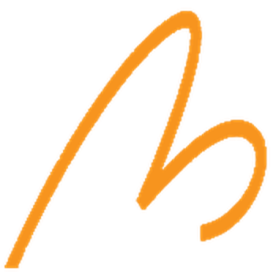

Loopbaanadvies en coaching in Groningen, van iemand die al 18 jaar met precies deze vragen werkt. Praktisch, persoonlijk en met oog voor resultaat.
Bel voor een eerste indrukMail MargritHoe kan ik mij verder ontwikkelen in mijn functie?
Mijn baas biedt me een outplacementtraject aan: wat moet ik doen?
Er vindt een reorganisatie plaats. Hoe wil ik eigenlijk zélf dat mijn toekomst eruitziet?
Het is tijd voor een nieuwe baan. Hoe pak ik dit effectief aan?
Hoe krijg ik weer plezier in mijn werk?
Ontplooi ik mijn talenten en kwaliteiten wel genoeg?
Hoe functioneer ik effectiever en versterk ik mijn zelfvertrouwen?
Je hebt meer in je mars dan wat je mag laten zien.
Herken je jezelf, of loop je rond met vergelijkbare vragen? Dan ben je van harte welkom. Je mag ook eerst bellen: 06 23 91 06 23. Dan krijg je een eerste indruk hoe Margrit je kan helpen.
Dat hangt van je vraag af. Dit zijn de trajecten, met de gemiddelde duur.
Je wilt een nieuwe richting vaststellen en een stappenplan maken om er te komen.
Je wilt een nieuwe richting aan je loopbaan geven, de mogelijkheden onderzoeken en een actieplan maken of actief op zoek naar een nieuwe functie.
Voor meer plezier, effectiviteit en bewustzijn in je werk. Je krijgt inzicht in je functioneren en handvatten om patronen te doorbreken.
Gericht solliciteren naar een nieuwe baan: zoekprofiel, zoekmethode, brief, cv, netwerk, gesprekken en salarisonderhandeling.
Je hebt de juiste vacature en wilt je voorbereiden. De inhoud bepalen jullie samen.
Een traject dat leidt tot een passende functie. Jullie zien elkaar zo vaak als nodig is, tot je een nieuwe baan vindt, inclusief coaching in de eerste periode.
Een helder stappenplan van product of dienst en ondernemingsvorm tot website en klantenwerving, met de expertise van andere ondernemers en een accountant.
Margrit ter Stege (1962) studeerde talen aan de Universiteit van Groningen en werkte daarna in het onderwijs. Op een gegeven moment begon het te kriebelen en liep ze tegen dezelfde vragen aan als haar klanten. Ze werkte daarna in de wereld van werving en selectie, en in verschillende leidinggevende en managementfuncties.
Daarna volgde ze de opleiding tot loopbaanadviseur en begon ze haar eigen bureau. Haar werkwijze: een eigen methodiek, bevlogenheid, creativiteit, een gezonde dosis humor en de wil om resultaten te zien. In haar visie heeft ieder mens talenten, een unieke combinatie van eigenschappen, voorkeuren, vaardigheden en drijfveren.
Twee persoonlijkheidstesten en een interessetest, die Margrit zelf inzet. Specifieke wensen, zoals een capaciteiten- of leiderschapstest, kunnen ook deel van een traject zijn.
Margrit werkt voor verschillende bureaus als trainingsacteur. Zo kun je met haar in de rol van acteur presentatietechnieken en communicatievaardigheden oefenen.
Denk aan starteradvies, gezondheidsadvies, werving en selectie of psychologische ondersteuning, plus collega loopbaanadviseurs en coaches als sparringpartner.
Gevestigd in gezondheidscentrum Hoendiep, 1e etage
Hoendiep 1, 9718 TA Groningen
Per fiets, auto of bus. De praktijk ligt op circa 15 minuten lopen van Groningen Centraal.
Bus: lijn 8 of 139, uitstappen bij de Rembrandt van Rijnstraat.
Auto: circa 1 autominuut van de westelijke ringweg, met directe aansluiting op de A7 en A28.
Parkeren: aan de achterzijde van het pand, het eerste uur gratis.